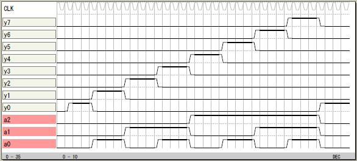

真理値表
L言語には真理値表を直接表記するための文法はないの
ですが switch 〜 endswitch で書き表せます。
その1
a2 a1 a0 y7 y6 y5 y4 y3 y2 y1 y0
0 0 0 -> 0 0 0 0 0 0 0 1
0 0 1 -> 0 0 0 0 0 0 1 0
0 1 0 -> 0 0 0 0 0 1 0 0
0 1 1 -> 0 0 0 0 1 0 0 0
1 0 0 -> 0 0 0 1 0 0 0 0
1 0 1 -> 0 0 1 0 0 0 0 0
1 1 0 -> 0 1 0 0 0 0 0 0
1 1 1 -> 1 0 0 0 0 0 0 0

論理譜
logicname yahoo42
entity main
input a[3];
output y[8];
switch(a)
case 0b000: y=0b00000001;
case 0b001: y=0b00000010;
case 0b010: y=0b00000100;
case 0b011: y=0b00001000;
case 0b100: y=0b00010000;
case 0b101: y=0b00100000;
case 0b110: y=0b01000000;
case 0b111: y=0b10000000;
endswitch
ende
entity sim
output a[3];
output y[8];
bitr tc[8];
part main(a,y)
tc=tc+1;
a=tc.2:4;
ende
endlogic
VHDL譜
library IEEE;
use IEEE.std_logic_1164.all;
entity main is
port(y0: out std_logic;
a0: in std_logic;
a1: in std_logic;
a2: in std_logic;
y1: out std_logic;
y2: out std_logic;
y3: out std_logic;
y4: out std_logic;
y5: out std_logic;
y6: out std_logic;
y7: out std_logic);
end main;
architecture RTL of main is
begin
y0 <= (not a0 and not a1 and not a2) ;
y1 <= (a0 and not a1 and not a2) ;
y2 <= (not a0 and a1 and not a2) ;
y3 <= (a0 and a1 and not a2) ;
y4 <= (not a0 and not a1 and a2) ;
y5 <= (a0 and not a1 and a2) ;
y6 <= (not a0 and a1 and a2) ;
y7 <= (a0 and a1 and a2) ;
end RTL;
|
その2
真理値表を2値以外で書くこともできます。
論理譜
logicname yahoo44
entity main
input a[3];
output y[8];
switch(a)
case 0: y=0b00000001;
case 1: y=0b00000010;
case 2: y=0b00000100;
case 3: y=0b00001000;
case 4: y=0b00010000;
case 5: y=0b00100000;
case 6: y=0b01000000;
case 7: y=0b10000000;
endswitch
ende
entity sim
output a[3];
output y[8];
bitr tc[8];
part main(a,y)
tc=tc+1;
a=tc.2:4;
ende
endlogic
その3
上と同じものです。
論理譜
logicname yahoo45
entity main
input a[3];
output y[8];
switch(a)
case 0: y.0=1;
case 1: y.1=1;
case 2: y.2=1;
case 3: y.3=1;
case 4: y.4=1;
case 5: y.5=1;
case 6: y.6=1;
case 7: y.7=1;
endswitch
ende
entity sim
output a[3];
output y[8];
bitr tc[8];
part main(a,y)
tc=tc+1;
a=tc.2:4;
ende
endlogic
その4
上と同じです。
論理譜
logicname yahoo45
entity main
input a[3];
output y[8];
y.0=(a==0);
y.1=(a==1);
y.2=(a==2);
y.3=(a==3);
y.4=(a==4);
y.5=(a==5);
y.6=(a==6);
y.7=(a==7);
ende
entity sim
output a[3];
output y[8];
bitr tc[8];
part main(a,y)
tc=tc+1;
a=tc.2:4;
ende
endlogic
|